History
I started running software architecture workshops somewhere around the mid-2000’s. Initially these were internal workshops for the consulting companies I worked for (to help our own developers move into tech lead/software architecture roles), but eventually the workshops were run for public audiences. The 2-day version of the workshop had a design exercise, where I’d ask the attendees to break up into small groups, read through the requirements, do some design, and draw some diagrams to summarise their solutions. The purpose of the diagrams was to provide a basis to discuss whether the solutions met the functional requirements, quality attributes, constraints, etc. But there was a problem - very few people in the room, myself included, were able to understand the diagrams!


Although I’d been using UML for most of my own career, UML usage across the industry had already started to decline, and the attendees had very little appetite to learn UML. In my own day-to-day job as a hands-on software architect, I’d already switched away from UML because it was no longer part of how our clients worked themselves. As a consultant, building software with and/or for our clients, I had a duty to create documentation for a variety of reasons. Instead of UML, I’d started creating block diagrams in Microsoft Visio to describe the software architecture of the software we were building, at different levels of detail. I’d start with a high-level diagram showing the software we were building, the various people who were using it, plus the major external system integration points. I’d then create a diagram showing web applications, middle-tiers, databases, etc. And finally I’d sometimes create a diagram showing the high-level concepts inside an application. This seemed to work well, so I thought I’d just teach this approach on my workshop as a way to help fix the diagramming issues. This is the root of the C4 model.
Static structure views
I ran a 1-day condensed version of the workshop at the QCon London conference in March 2010, I think in conjunction with a colleague, where we each presented different parts of the workshop during the day. I had a side-interest in photography at the time, and had the idea to use different camera lens types (wide angle, telephoto, macro) to describe the different types of software architecture diagrams that I was creating. The following slide appeared in that workshop:
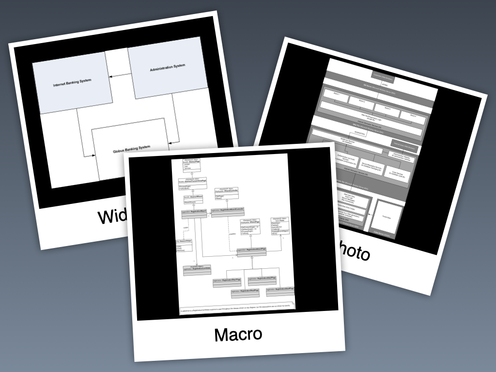
Perhaps just a week later I presented a session at IASA London titled “Where do you start?” - a talk about how you take a vague idea and turn it into a technical solution, by starting with the “big picture” and working down into the detail. I presented the same camera lens analogy (now wide angle, standard, telephoto, macro), but the four defined levels of abstractions (systems, containers, components, and classes) made an appearance:
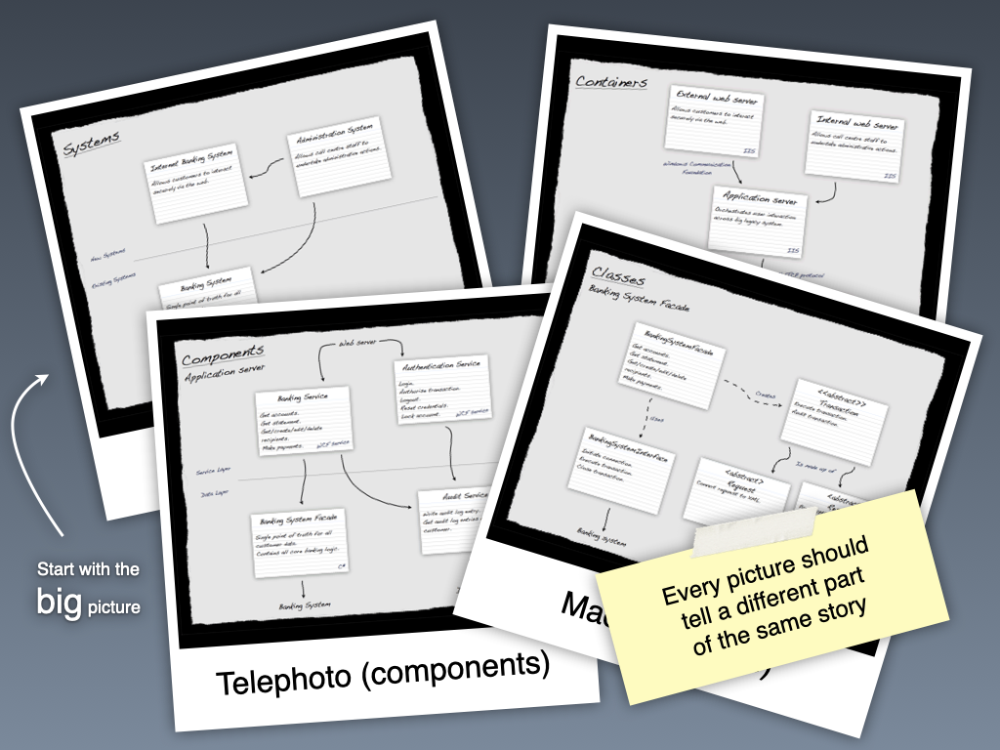
My workshop at QCon London 2011 (this time titled, “Designing software, drawing pictures”) builds upon all of this, being more explicit about the hierarchy of diagrams and elements.
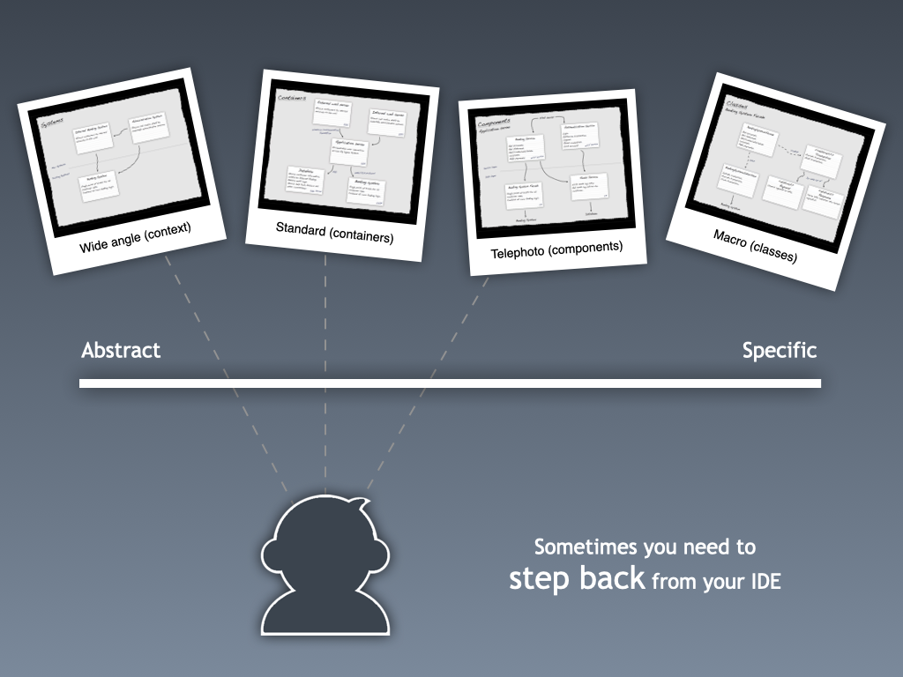
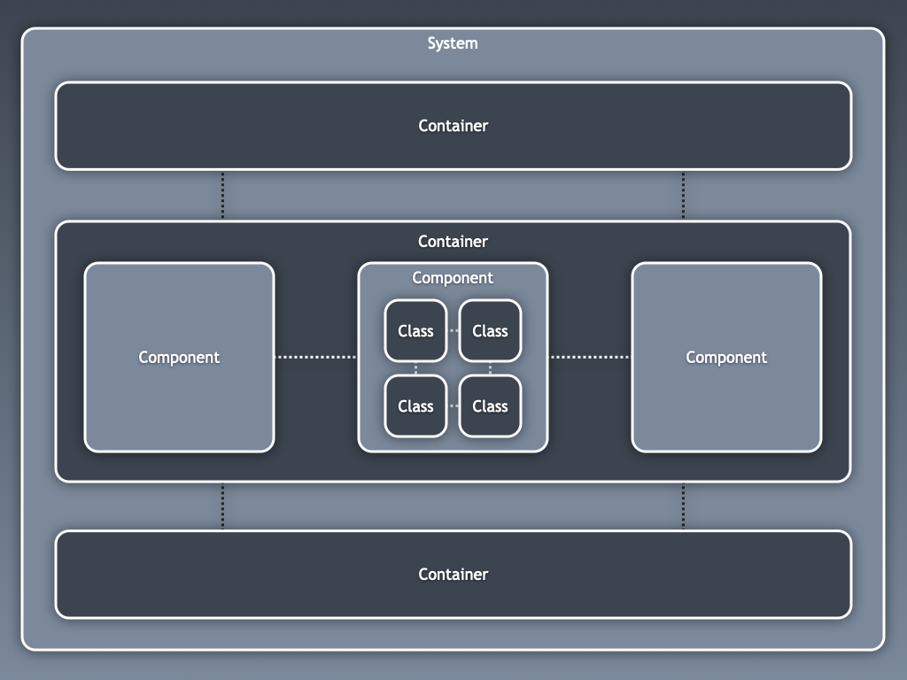
This is the first reference to the “C4” name that I can find too, although the final “C” represents classes because I was writing Java and C# code at the time.
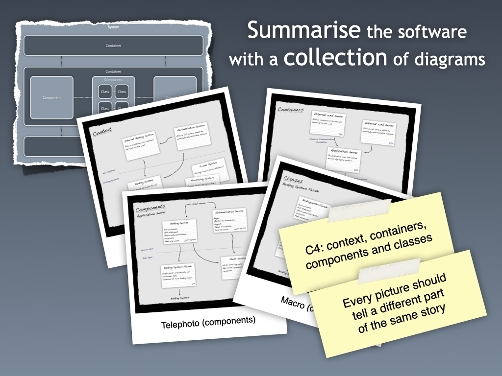
This was reinforced in my “Effective sketches” workshop (the original name for my diagramming workshop) at DevWeek 2012:
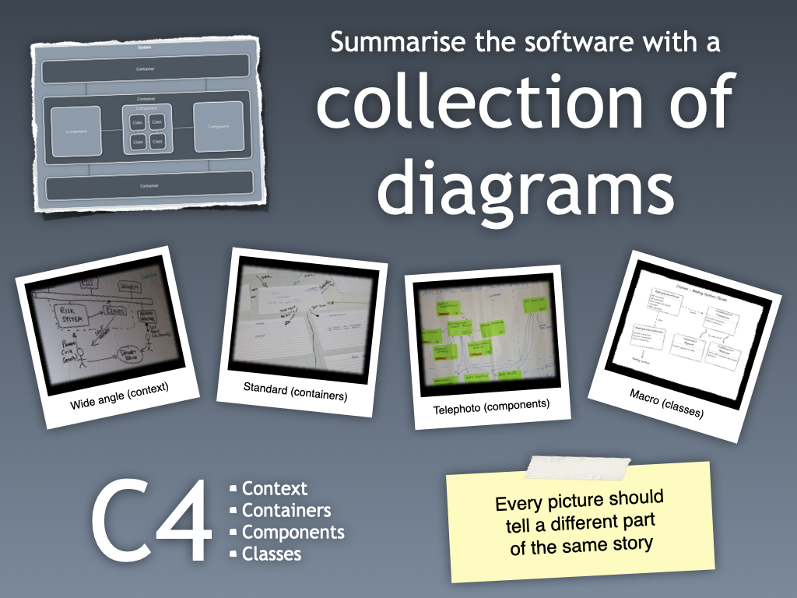
This slide from “Effective architecture sketches” at GOTO Aarhus 2012 additionally has a note about how other views are important:
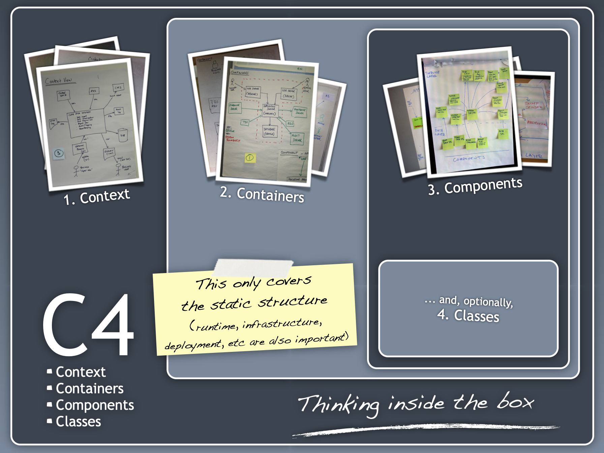
Agile 2013, and “Simple sketches for diagramming your software architecture” included the following slide, which is one of the first references I can find to using the “maps of your code” analogy:
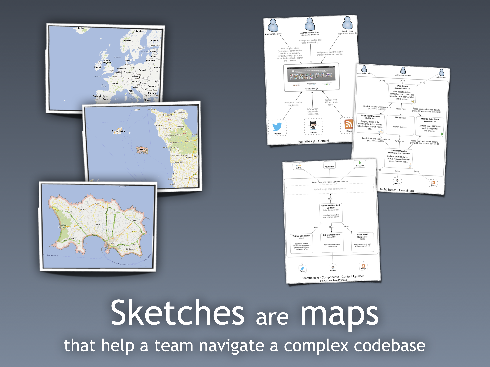
This next slide was in my talk at Craft Conference 2014, titled “Agility and the essence of software architecture”. The fact that it’s in a widescreen format suggests this was already a part of my workshop, and modified for this particular event.
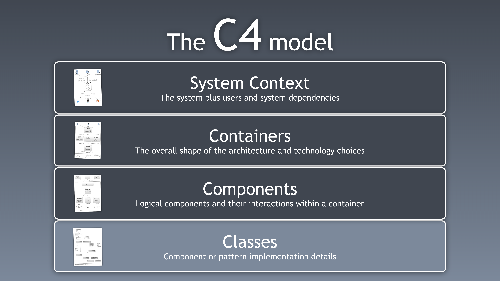
Fast-forward to an agile meetup that I spoke at in Hong Kong at the start of 2016, the talk titled, “The Art of Visualising Software Architecture” included a variation of a slide we’ve seen before. Note how “Classes” has changed to “Classes (or code)”.
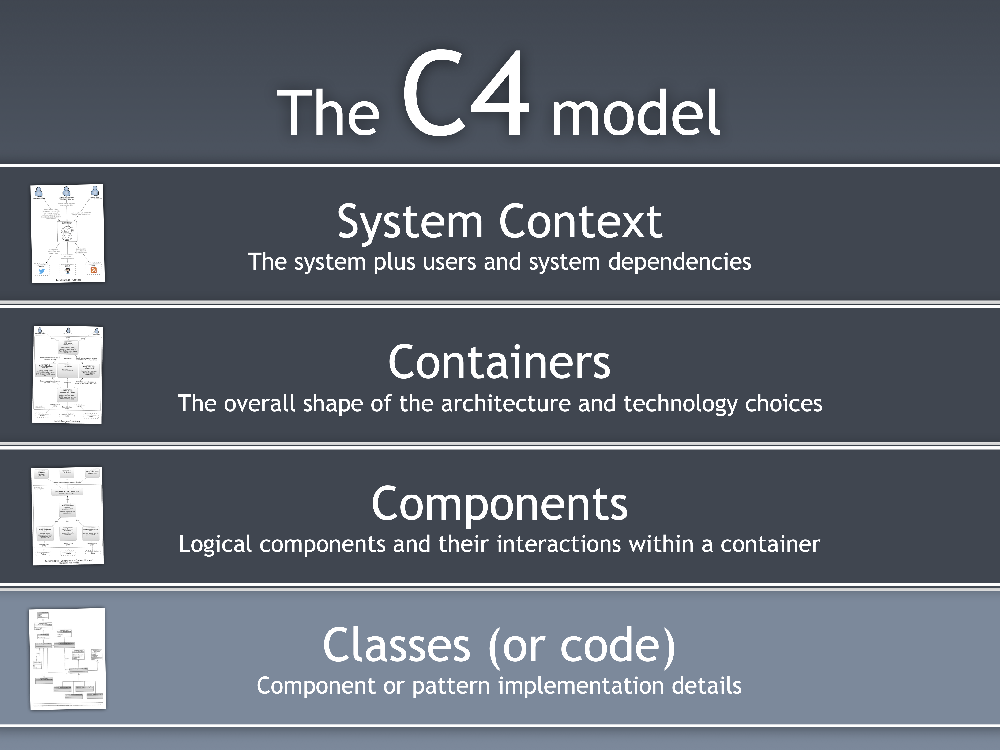
My “The Art of Visualising Software Architecture” talk at a GOTO Night in Copenhagen during March 2016 included a small change, but one that helped to reinforce the hierarchical nature of the diagrams. “Code” has become capitalised, and the description says, “Component implementation details”.
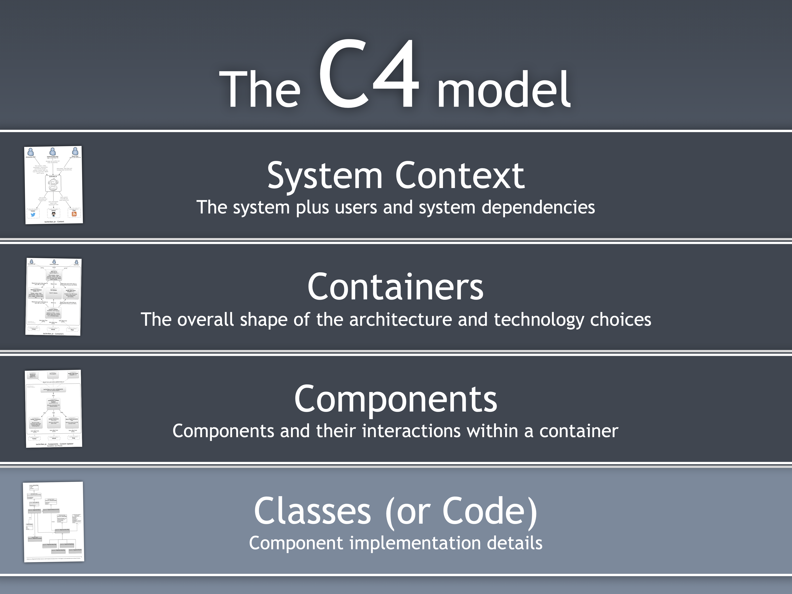
In my “Visualising software architecture with the C4 model” talk at the Virtual JUG in March 2018, this was finally switched from “Classes” to “Code”, which brings us to where we are today.
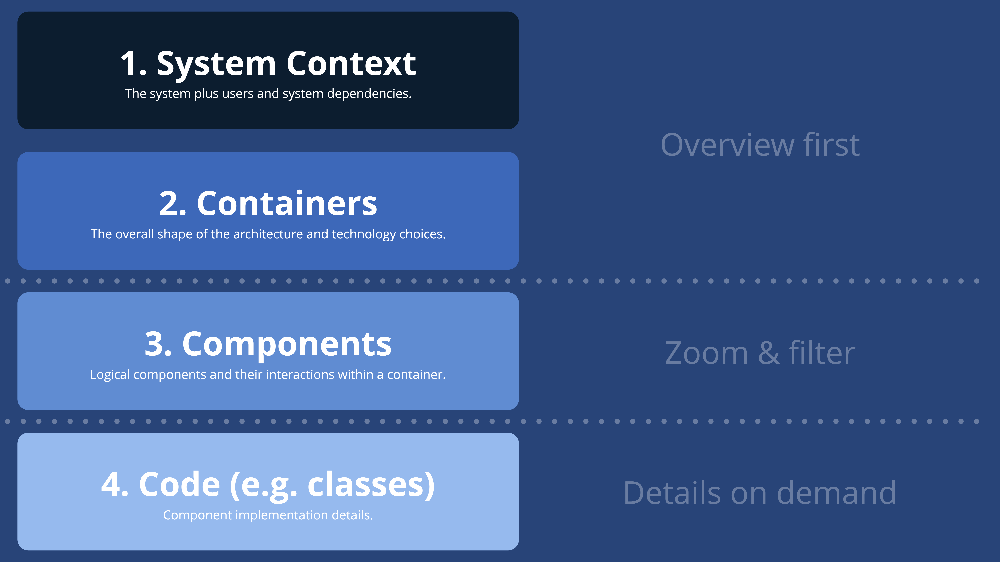